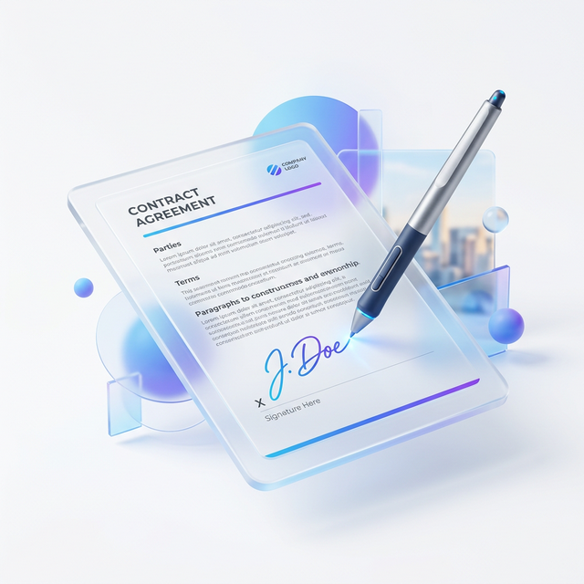

The Easiest Way to Digitally Sign PDF Documents Online for Free

In the "old days," signing a contract meant a four-hour excursion: find a printer, wait for the paper to jam, realize you're out of ink, run to the store, sign with a pen that might leak, find a scanner, realize the scan is sideways, and finally email it back. It was a waste of paper, time, and money.
Today, there is a better way. You can digitally sign PDF documents online for free from anywhere—whether you're at your desk or on your phone in a coffee shop. In this article, we'll show you how to swap the pen for a cursor and get your documents signed in record time.
Is a Digital Signature Legally Binding?
Before we jump into the "how," let's talk about legality. Many people worry that a signature made on a screen won't be accepted. However, thanks to laws like the ESIGN Act in the US and eIDAS in the EU, electronic signatures are just as legally binding as traditional "ink-on-paper" signatures for the vast majority of personal and business transactions.
Legal Note
Unless you are signing a property deed or a last will and testament (which often require physical witnesses), a digital signature is a perfectly valid way to close a deal.
How to Sign a PDF Without Printing and Scanning
Using our online signature tool, you can complete the process in three simple steps. No software downloads are required, and no hidden fees apply.
Step 1: Upload Your Contract
Open the PDFjin Sign PDF tool and upload the document you need to sign. Our viewer will render the document so you can read through it one last time before committing your signature.
Step 2: Create Your Signature
You have three ways to create your digital mark:
- Draw: Use your mouse, trackpad, or touchscreen to draw your signature naturally.
- Type: Type your name and choose from several professional handwritten font styles.
- Upload: If you already have a picture of your signature saved, simply upload the image.
Step 3: Place and Save
Once your signature is ready, simply drag and drop it onto the signature line. You can resize it to fit the box perfectly. Click "Save and Finish," and your signed document is ready for download.
Sign Your Document in 30 Seconds
Stop printing and start signing digitally. It's faster, greener, and completely free.
Digitally Sign a PDF NowSecurity and Peace of Mind
When you digitally sign PDF documents online for free, security is non-negotiable. At PDFjin, we use SSL encryption for all file transfers, ensuring that no one can intercept your sensitive contracts. We also adhere to a strict "No Log" policy—your files are processed, signed, and then permanently deleted from our system within an hour.
Pro Tips for a Professional Signature
- Use a Stylus: If you're on a tablet or phone, a cheap stylus makes drawing your signature feel much more natural.
- Consistency: Try to keep your digital signature as close to your physical one as possible.
- High Resolution: If you choose the "Upload" method, make sure the photo of your signature is taken in good light.
Our goal at PDFjin is to make these "advanced" tasks accessible to everyone. You don't need to be a tech wizard to sign a lease or employment contract. Simply upload, sign, and get back to your day!